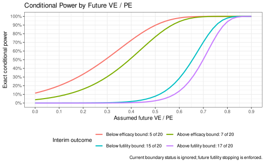

Introduction
This article explores a method of approximating a design using the
exact binomial method of Chan and Bohidar
(1998) by a time-to-event design using the method of Lachin and Foulkes (1986). Vaccine efficacy (VE)
is also termed prevention efficacy (PE) when the intervention is a
preventive compound rather than a vaccine. The estimand and methods
presented here are the same in either setting. We use VE throughout
because the motivating example is a vaccine trial, but VE can be read as
PE for other preventive interventions. This allows use of spending
functions to derive boundaries for the exact method. The time-to-event
design can not only be used to set boundaries for the Chan and Bohidar (1998) method, but to allow
specification of enrollment duration and study duration to determine
enrollment rates and sample size required. This vignette also
illustrates the concept of super-superiority often used in prevention
studies. We recommend checking the resulting boundaries and, when
appropriate, revising the spending function choices to improve them. For
an extension to annual seasonal monitoring with blinded
information-adaptive enrollment, see
vignette("MultiSeasonRareEvents", package = "gsDesign").
Parameterization
We begin with the assumption that we will a require a large sample size due to an endpoint with a small incidence rate. This could apply to a vaccine study or other prevention study with a relatively small number of events expected.
Exact binomial approach
Paralleling the notation of Chan and Bohidar (1998), we assume \(N_C, P_C\) to be binomial sample size and probability of an event for each participant assigned to control; for the experimental treatment group, these are labeled \(N_E, P_E\). Vaccine efficacy, or prevention efficacy for a non-vaccine intervention, is defined as
\[\pi = 1 - P_E/P_C.\]
The parameter \(\pi\) is often labeled VE for vaccine efficacy or PE for prevention efficacy. Taking into account the randomization ratio \(r\) (experimental / control) the approximate probability that any given event is in the experimental group is
\[ \begin{aligned} p &= rP_E/(rP_E+ P_C)\\ &= r/(r + P_C/P_E)\\ &= r/(r + (1-\pi)^{-1}). \end{aligned} \]
As noted, this approximation is dependent on a large sample size and small probability of events. The above can be inverted to obtain
\[\pi = 1 - \frac{1}{r(1/p-1)}. \]
For our example of interest, we begin with an alternate hypothesis vaccine efficacy \(\pi_1 = 0.7\) and experimental:control randomization ratio \(r=3\). This converts to an alternate hypothesis (approximate) probability that any event is in the experimental group of
pi1 <- .7
ratio <- 3
p1 <- ratio / (ratio + 1 / (1 - pi1))
p1#> [1] 0.4736842We use the inversion formula to revert this to \(\pi_1 = 0.7\)
1 - 1 / (ratio * (1 / p1 - 1))#> [1] 0.7Letting the null hypothesis vaccine efficacy be \(\pi_0 = 0.3\), our exact binomial null hypothesis probability that an event is in the experimental group is
pi0 <- .3
p0 <- ratio / (ratio + 1 / (1 - pi0))
p0#> [1] 0.6774194We also translate several vaccine efficacy values to proportion of events in the experimental group:
ve <- c(.5, .6, .65, .7, .75, .8)
prob_experimental <- ratio / (ratio + 1 / (1 - ve))
tibble::tibble(VE = ve, "P(Experimental)" = prob_experimental) |>
lt() |>
lt_format(columns = 2, decimals = 3)Chapter 12 of Jennison and Turnbull (2000) walks through how to design and analyze such a study using a fixed or group sequential design. The time-to-event approximation provides an initial approximation to computing bounds; more importantly, it provides sample size and study duration approximations that are not given by the Jennison and Turnbull approach.
The time-to-event approach
For a time-to-event formulation with exponential failure rates \(\lambda_C\) for control and \(\lambda_E\) for experimental group assigned participants, we would define
\[\pi = 1 - \lambda_E / \lambda_C\]
which is 1 minus the hazard ratio often used in time-to-event studies. In the following we examine how closely the time-to-event method using asymptotic distributional assumptions can approximate an appropriate exact binomial design. We will also define a planned number of events at each of \(K\) planned analyses by \(D_k, 1\le k\le K\).
Generating a design
We begin by specifying parameters. The alpha and
beta parameters will not be met exactly due to the discrete
group sequential probability calculations performed. The current version
includes only designs that use non-binding futility bounds or no
futility bounds. The design is generated by first using asymptotic
theory for a time-to-event design with specified spending functions.
This design is then adapted to a design using the exact binomial method
of Chan and Bohidar (1998). The
randomization ratio (experimental/control) was assumed to be 3:1 as in
the Logunov et al.
(2021) trial.
alpha <- 0.025 # Type I error
beta <- 0.1 # Type II error (1 - power)
k <- 3 # number of analyses in group sequential design
timing <- c(.45, .7) # Relative timing of interim analyses compared to final
sfu <- sfHSD # Efficacy bound spending function (Hwang-Shih-DeCani)
sfupar <- -3 # Parameter for efficacy spending function
sfl <- sfHSD # Futility bound spending function (Hwang-Shih-DeCani)
sflpar <- -3 # Futility bound spending function parameter
timename <- "Month" # Time unit
failRate <- .002 # Exponential failure rate
dropoutRate <- .0001 # Exponential dropout rate
enrollDuration <- 8 # Enrollment duration
trialDuration <- 24 # Planned trial duration
VE1 <- .7 # Alternate hypothesis vaccine efficacy
VE0 <- .3 # Null hypothesis vaccine efficacy
ratio <- 3 # Experimental/Control enrollment ratio
test.type <- 4 # 1 for one-sided, 4 for non-binding futilityThe time-to-event design
Now we generate the design. If resulting alpha and beta do not satisfy requirements, adjust parameters above until a satisfactory result is obtained.
# Derive Group Sequential Design
# This determines final sample size
x <- gsSurv(
k = k, test.type = test.type, alpha = alpha, beta = beta, timing = timing,
sfu = sfu, sfupar = sfupar, sfl = sfl, sflpar = sflpar,
lambdaC = failRate, eta = dropoutRate,
# Translate vaccine efficacy to HR
hr = 1 - VE1, hr0 = 1 - VE0,
R = enrollDuration, T = trialDuration,
minfup = trialDuration - enrollDuration, ratio = ratio
)The gsSurv() design need not be converted to an exact
binomial design. If the planned analysis uses a log-rank test or Poisson
regression, the group sequential boundaries from the asymptotic design
can be used directly. The remainder of this vignette performs the
conversion for a design whose planned analysis uses the exact
conditional binomial method.
Now we convert this to a design with integer event counts at
analyses. This is achieved by rounding event counts down and rounding
total sample size to an integer allocation. This will result in a slight
change in event fractions at interim analyses as well as a slight change
from the targeted 90% power. We now explain the rationale behind the
spending function choices. Recall that the hazard ratio (HR) is 1 minus
the VE. The ~HR at bound represents the approximate hazard
ratio required to cross a bound. Thus, small HR’s at the interim
analyses along with small cumulative \(\alpha\)-spending suggest crossing an
interim efficacy bound would provide a result strong enough to
potentially justify the new treatment. The hazard ratio of ~0.69 (VE ~
0.31) for the interim 1 futility bound mean that the efficacy trend
would be essentially no better than the null hypothesis if the futility
bound were crossed. The second analysis futility bound with approximate
VE of 0.5 would be worth discussion with a data monitoring committee as
well as other planners for the trial; a custom spending function could
be used to set both the first and second interim bounds to desired
levels.
xx <- toInteger(x)
gsBoundSummary(xx,
tdigits = 1, logdelta = TRUE, deltaname = "HR", Nname = "Events",
exclude = c("B-value", "CP", "CP H1", "PP")
) |>
lt() |>
lt_header(
title = "Initial group sequential approximation",
subtitle = "Integer event counts at analyses"
)A textual summary for the design is:
Asymmetric two-sided group sequential design with non-binding futility bound, 3 analyses, time-to-event outcome with sample size 3632 and 68 events required, 90 percent power, 2.5 percent (1-sided) Type I error to detect a hazard ratio of 0.3 with a null hypothesis hazard ratio of 0.7. Enrollment and total study durations are assumed to be 8 and 24 months, respectively. Efficacy bounds derived using a Hwang-Shih-DeCani spending function with gamma = -3. Futility bounds derived using a Hwang-Shih-DeCani spending function with gamma = -3.
Converting to an exact binomial design
We now convert this to an exact binomial design. Full conversion with
toBinomialExact() is available for non-binding
test.type = 1, 4, 6, and
8. For type 4, the upper event-count stopping boundary
targets beta spending under the alternative; for type 6 it targets
lower-bound spending under the null using astar. For type
8, upper contains all upper event-count stops and the
additional futility and harm components
partition those stops into mutually exclusive regions. The exact
futility boundary targets beta spending under the alternative, while the
harm boundary targets astar spending under the null. Exact
efficacy repeated and sequential p-values remain available for all four
non-binding test types and intentionally ignore their non-binding lower
and harm bounds. The bound counts are described in this initial table
displayed. N is the total event count, a the
maximum number of events in the experimental group to cross the efficacy
bound. For example, if 12 or fewer of 30 events at interim 1 are in the
experimental group the efficacy bound has been crossed. The futility
bound is in b; at the first interim, if 21 or more of 30
total events are in the experimental group then the futility bound would
be crossed and the alternate hypothesis could be rejected. The second
and third tables below give probabilities of crossing the upper
(futility) and lower (efficacy) bounds under the null
(theta = 0.6774) and alternate (theta =
0.4737) hypotheses, respectively; these calculations are done under the
exact binomial distribution assumptions.
xb <- toBinomialExact(x)Combined summary table
We produce a summary table with VEtable(). This combines
information from the time-to-event design for calendar timing of
analyses (Time) and expected sample size at each analysis (N) along with
bounds and operating characteristics for the design. Although the
function and its ve argument use vaccine efficacy
terminology, the supplied values can represent prevention efficacy for a
non-vaccine preventive intervention.
The initial approximation of bounds for the exact binomial design was generated from the time-to-event design as follows. First, we computed nominal p-value 1-sided bounds under the null hypothesis for the efficacy bounds using the normal approximation that the time-to-event design used:
efficacyNominalPValue <- pnorm(-xx$upper$bound)
efficacyNominalPValue#> [1] 0.003832879 0.007548194 0.021066070Then we took the inverse binomial distribution for these p-values assuming the targeted total number of cases to obtain:
qbinom(p = efficacyNominalPValue, size = xx$n.I, prob = p0) - 1#> [1] 13 23 37This is actually the same as the final bounds computed above:
xb$lower$bound#> [1] 13 24 37This and the initial approximation for the futility bound are
returned from toBinomialExact():
xb$init_approx$a#> [1] 13 23 37
xb$init_approx$b#> [1] 21 29 38For the futility bound, only a slight adjustment was required for the final bound:
xb$upper$bound#> [1] 22 30 38The vaccine efficacy at bounds should be checked to see if the evidence is convincing enough to be accepted as a clinically relevant benefit in addition to statistical benefit (efficacy bounds) or a less than relevant benefit for futility bounds.
Checking design properties
Next, we look at \(\alpha\)- and \(\beta\)-spending for the time-to-event design to compare to the exact bound restricted by the discrete possible counts at bounds. For both \(\alpha\)- and \(\beta\)-spending, the exact binomial design has no more spending at each analysis than allowed by each spending function. We also confirm that changing any of the exact bounds by 1 exceeds the targeting spending.
\(\alpha\)-spending
# Exact design cumulative alpha-spending at efficacy bounds
# (non-binding)
nb <- gsBinomialExact(k = xb$k, theta = xb$theta, n.I = xb$n.I, b= xb$n.I + 1, a = xb$lower$bound)
cumsum(nb$lower$prob[,1])#> Analysis 1 Analysis 2 Analysis 3
#> 0.002703239 0.009176778 0.018982186
# Targeted alpha-spending
xx$upper$sf(alpha, t = xx$timing, xx$upper$param)$spend#> [1] 0.003832879 0.009577354 0.025000000Above we see the achieved \(\alpha\)-spending ignoring the futility bound is controlled at the targeted level at each analysis; because of the exact bound, control is below the target. For this particular example, we show below that increasing any efficacy bound by 1 not only increases above the targeted cumulative spend compared to above at each analysis (diagonal elements), but also exceeds the targeted total spend of 0.025 at the final analysis (final column). The latter property will not always hold. Choosing your spending function carefully (in this case, using the spending function parameter) to ensure cumulative spending for the exact design is close to the targeted \(\alpha\) is worth careful examination. For this case, choosing the Hwang-Shih-DeCani efficacy spending parameter as \(\gamma=-4\) instead of \(\gamma=-3\) second property would not hold.
# Check that increasing any bound goes above cumulative spend
excess_alpha_spend <- matrix(0, nrow = nb$k, ncol=nb$k)
for(i in 1:xb$k){
a <- xb$lower$bound
a[i] <- a[i] + 1
excess_alpha_spend[i,] <-
cumsum(gsBinomialExact(k = xb$k, theta = xb$theta, n.I = xb$n.I, b= xb$n.I + 1, a = a)$lower$prob[,1])
}
excess_alpha_spend#> [,1] [,2] [,3]
#> [1,] 0.007742914 0.012745616 0.02201467
#> [2,] 0.002703239 0.017820794 0.02502423
#> [3,] 0.002703239 0.009176778 0.02967058\(\beta\)-spending
# Cumulative beta-spending for exact design
cumsum(xb$upper$prob[,2])#> Analysis 1 Analysis 2 Analysis 3
#> 0.006760093 0.027359634 0.097411064
# Targeted beta-spending
xx$lower$sf(beta, t = xx$timing, xx$lower$param)$spend#> [1] 0.01533151 0.03830942 0.10000000Since the futility bound at the final analysis is only 1 plus the efficacy bound, it cannot be lowered in the following. However, we see that changing either interim futility bound by 1 would exceed targeted interim spending (diagonal elements) and total Type II error spending (third column). Again, the spending function had to be carefully chosen to ensure the second of these properties; e.g., with the O’Brien-Flemining-like spending function the second property did not hold.
# Check that increasing any bound goes above cumulative spend
excess_beta_spend <- matrix(0, nrow = nb$k - 1, ncol=nb$k)
for(i in 1:(xb$k - 1)){
b <- xb$upper$bound
b[i] <- b[i] - 1
excess_beta_spend[i,] <-
cumsum(as.numeric(gsBinomialExact(k = xb$k, theta = xb$theta, n.I = xb$n.I, b = b, a = xb$lower$bound)$upper$prob[,2]))
}
excess_beta_spend#> [,1] [,2] [,3]
#> [1,] 0.017842801 0.03386750 0.1009881
#> [2,] 0.006760093 0.04900921 0.1046241Bound update at time of analysis for example 2
We now use the second interim analysis outcome from the SPUTNIK trial to show how to update bounds from above when event counts differ from planned. The first database was on November 18, 2020 and included 20 endpoints. The second database lock with 78 endpoint cases was one week later on November 24, 2020. These are slightly different than the targeted event counts above and bounds must be updated using the spending functions for the trial based on the altered information fraction compared to plan; see table below. At the time of analysis of 78 endpoint events, 16 were in the experimental group, comfortably crossing the efficacy bound requiring 44 or fewer experimental events. Given the rapid accrual of endpoints, the futility bound would likely have been irrelevant for the first interim. Since Type I error assumed a non-binding bound, the first analysis could be ignored; i.e., since it was non-binding the futility bound could be ignored for decision-making purposes without inflating Type I error. The VE = -0.33 at the futility bound favored placebo. Since we have overrun the targeted event count at the second analysis we exceed the targeted power and never reach the allowed \(\beta\)-spending for Type II error. Note that for this table, the expected sample size and calendar timing are no longer needed.
ebUpdate <- toBinomialExact(xx, observedEvents = c(20, 78))The updated exact design retains the randomization ratio from
xx, so no time-to-event design is needed for this
table.
Analysis of an exact binomial trial
Exact conditional power
Like gsCP() for asymptotic group sequential designs,
gsCPBinomialExact() conditions on the interim statistic and
calculates the probability of crossing each future boundary. Here the
sufficient interim statistic is the cumulative number of
experimental-group events among the total events. Conditional on that
count, future experimental-group event increments follow an exact
binomial distribution.
For a single interim analysis, suppose that 9 of the first 20 events were in the experimental group. This count is within the continuation region of 7 to 15 events for the updated design. We calculate conditional power under the null VE of 0.3, an intermediate VE of 0.5, and the design alternative VE of 0.7:
exact_cp <- gsCPBinomialExact(
ebUpdate,
i = 1,
x.i = 9,
ve = c(.3, .5, .7)
)
tibble::tibble(
VE = exact_cp$efficacy,
`Conditional power` = exact_cp$conditional_power,
`Conditional futility` = exact_cp$conditional_futility
) |>
lt() |>
lt_format(columns = 1:3, decimals = 3) |>
lt_header("Exact Conditional Power after 9 of 20 Experimental-Group Events")The observed interim count is used only as the conditioning state.
The calculation is therefore available even if that count has already
crossed the current efficacy, futility, or harm boundary. This is a
hypothetical projection of what would happen if follow-up continued, not
a reversal of a stopping decision. The default
binding = TRUE treats future futility or harm
boundaries as stopping rules. For a design with non-binding futility,
binding = FALSE instead reports conditional efficacy power
when those future boundaries will not be enforced. The calculation
accepts theta directly for conditional experimental-group
event probabilities or ve for VE or PE assumptions.
Conditional power can also be examined across a range of assumptions
about future VE or PE. At the first analysis the efficacy and futility
bounds are 6 and 16 experimental-group events, respectively. We compare
four hypothetical outcomes that fall strictly below and above each
boundary: 5, 7, 15, and 17 events. Current boundary status is ignored
for conditioning, while the default binding = TRUE
continues to enforce future futility stopping.
future_ve <- seq(0, .9, by = .02)
interim_outcomes <- c(
"Below efficacy bound: 5 of 20" = 5,
"Above efficacy bound: 7 of 20" = 7,
"Below futility bound: 15 of 20" = 15,
"Above futility bound: 17 of 20" = 17
)
conditional_power_plot_data <- do.call(
rbind,
lapply(names(interim_outcomes), function(outcome) {
cp <- gsCPBinomialExact(
ebUpdate,
i = 1,
x.i = interim_outcomes[[outcome]],
ve = future_ve,
binding = TRUE
)
data.frame(
VE = cp$efficacy,
conditional_power = cp$conditional_power,
outcome = outcome
)
})
)
conditional_power_plot_data$outcome <- factor(
conditional_power_plot_data$outcome,
levels = names(interim_outcomes)
)
ggplot2::ggplot(
conditional_power_plot_data,
ggplot2::aes(x = VE, y = conditional_power, color = outcome)
) +
ggplot2::geom_line(linewidth = 1) +
ggplot2::scale_x_continuous(
breaks = seq(0, .9, by = .1),
limits = c(0, .9)
) +
ggplot2::scale_y_continuous(
breaks = seq(0, 1, by = .1),
limits = c(0, 1),
labels = function(z) paste0(round(100 * z), "%")
) +
ggplot2::labs(
x = "Assumed future VE / PE",
y = "Exact conditional power",
color = "Interim outcome",
title = "Conditional Power by Future VE / PE",
caption = paste(
"Current boundary status is ignored; future futility stopping is enforced."
)
) +
ggplot2::theme_bw() +
ggplot2::theme(legend.position = "bottom") +
ggplot2::guides(color = ggplot2::guide_legend(nrow = 2, byrow = TRUE))
Exact confidence intervals
At a fixed analysis, ciBinomialExact() computes a
Clopper–Pearson interval (Clopper and Pearson
1934) for the conditional probability that an event is in the
experimental group and transforms it to the VE or PE scale. The
transformation is decreasing, so the two probability endpoints are
reversed. For the 16 experimental-group events among 78 total events
reported above, the fixed-look interval is:
ciBinomialExact(x = 16, n = 78, ratio = ratio) |>
lt() |>
lt_format(columns = c("estimate", "conf.low", "conf.high"), decimals = 3)Repeated intervals are obtained by inverting the exact group sequential test at each analysis (Jennison and Turnbull 1984; Coe and Tamhane 1993). As in the corresponding asymptotic construction, a two-sided \(1-\alpha\) interval uses \(\alpha/2\) in each direction with the same spending function, spending times, and count-path ordering. The upper direction mirrors experimental and control event counts; it does not use the futility boundary. The resulting intervals can be conservative because event counts are discrete.
The complete experimental-group event-count path is required. Since the first experimental-group count is not reported in this example, the following uses 9 events at the first look only to illustrate the calculation:
illustrative_x <- c(9, 16)
repeated_ci <- repeatedCIBinomialExact(
xx, n.I = c(20, 78), x = illustrative_x
)
sequential_ci <- sequentialCIBinomialExact(
xx, n.I = c(20, 78), x = illustrative_x
)
rbind(
transform(repeated_ci, Interval = "Repeated"),
transform(sequential_ci, Interval = "Sequential")
) |>
dplyr::select(Interval, dplyr::everything()) |>
lt() |>
lt_format(columns = c("estimate", "conf.low", "conf.high"), decimals = 3)The sequential interval at analysis \(j\) is the intersection of repeated intervals through analysis \(j\), equivalently the inversion of the minimum repeated p-value through that analysis. Thus sequential intervals can only narrow as analyses accumulate.
Summary
We have provided an extended example to show that a Chan and Bohidar (1998) exact binomial using spending function bounds can be derived in a two-step process that delivers sample size and bounds by 1) deriving a related time-to-event design using asymptotic methods and then 2) converting to an exact binomial design. Adjustments were made to target Type I and Type II error probabilities in the asymptotic approximation to ensure the exact binomial Type I and Type II error rates were achieved. The method seems a reasonable and straightforward approach to develop a complete design that accounts for the impact of enrollment, failure rates dropout rates, and trial duration.